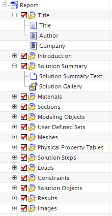

A report is an HTML document containing .gif images and other FE model data. It consists of a title page and multiple chapters. Each chapter contains automatically generated information, with some sections including optional information that you can enter or edit.
|

|